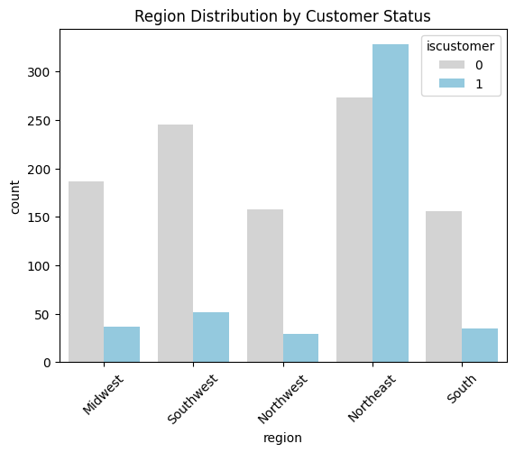
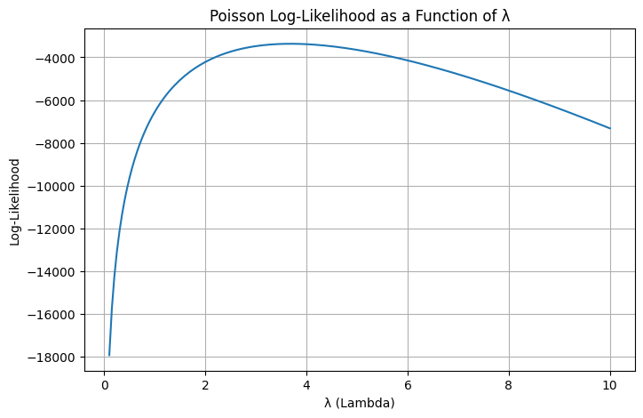

Poisson Regression Examples
Blueprinty Case Study
Introduction
Blueprinty is a small firm that makes software for developing blueprints specifically for submitting patent applications to the US patent office. Their marketing team would like to make the claim that patent applicants using Blueprinty’s software are more successful in getting their patent applications approved. Ideal data to study such an effect might include the success rate of patent applications before using Blueprinty’s software and after using it. Unfortunately, such data is not available.
However, Blueprinty has collected data on 1,500 mature (non-startup) engineering firms. The data include each firm’s number of patents awarded over the last 5 years, regional location, age since incorporation, and whether or not the firm uses Blueprinty’s software. The marketing team would like to use this data to make the claim that firms using Blueprinty’s software are more successful in getting their patent applications approved.
Data
This dataset contains information on 1,500 mature engineering firms and is intended to help evaluate whether the use of Blueprinty software is associated with a higher number of awarded patents. The dataset includes four columns:
Variables
| Variable | Description |
|---|---|
patents |
Number of patents awarded to the firm in the past five years (integer). |
region |
The geographic region where the firm is located (categorical). |
age |
The age of the firm since incorporation, in years (float). |
iscustomer |
Binary indicator of whether the firm uses Blueprinty software (0 = no, 1 = yes). |
Data Characteristics
- Total observations: 1,500 firms
- No missing values
- Data types:
patents:int64
region:object(categorical)
age:float64
iscustomer:int64(binary)
To explore whether firms using Blueprinty’s software tend to have more patents, we compared the distribution of patent counts between customers and non-customers.
The histograms below show the number of patents awarded to firms, segmented by whether or not they are Blueprinty customers (iscustomer = 1 or 0):

Visually, we observe that Blueprinty customers tend to have slightly more patents than non-customers. The distribution for customers is shifted to the right and shows a longer tail, indicating a higher frequency of firms with larger patent counts.
Code
import pandas as pd
import matplotlib.pyplot as plt
import seaborn as sns
blueprinty = pd.read_csv('blueprinty.csv')
g = sns.displot(
data=blueprinty,
x="patents",
col="iscustomer",
kind="hist",
bins=30,
kde=True,
height=4,
aspect=1.5,
facet_kws={'margin_titles': True}
)
g.set_axis_labels("Number of Patents", "Count")
g.set_titles(col_template="Customer: {col_name}")
plt.subplots_adjust(top=0.8)
for ax in g.axes.flatten():
ax.tick_params(labelbottom=True)
g.fig.suptitle("Patent Distribution by Customer Status")To confirm this pattern numerically, we calculate the average number of patents for each group:
patent_mean_bycustomer = blueprinty.groupby('iscustomer')['patents'].mean()
patent_mean_bycustomerThe results show:
- Non-customers: 3.47 patents on average
- Customers: 4.13 patents on average
This difference supports the notion that customer firms, on average, are more productive in securing patents.
While this descriptive analysis does not establish a causal link, the pattern suggests a positive association between using Blueprinty and higher patent output.
Blueprinty customers are not selected at random. It may be important to account for systematic differences in the age and regional location of customers vs non-customers.
From the regional distribution, we observe that Blueprinty customers are most concentrated in the Northeast, where their count even exceeds that of non-customers. In contrast, in regions such as the Midwest, Northwest, and South, non-customer firms are significantly more numerous. This suggests that Blueprinty may have a stronger market presence or outreach in the Northeast region.

In terms of firm age, Blueprinty customers tend to be younger. The majority of customer firms fall into the ≤20 and 21–30 age groups, while very few are in the 41–50 or >50 categories. Although non-customer firms also peak in the 21–30 group, they are more evenly distributed across older age groups compared to customers.

These patterns imply that Blueprinty’s user base skews younger and more regionally concentrated, which could influence other observed differences, such as patent counts, and should be taken into account when interpreting any causal claims.
Estimation of Simple Poisson Model
Since our outcome variable of interest can only be small integer values per a set unit of time, we can use a Poisson density to model the number of patents awarded to each engineering firm over the last 5 years. We start by estimating a simple Poisson model via Maximum Likelihood.
The likelihood function for a set of independent observations \(Y_1\), \(Y_2\), \(\dots\), \(Y_n\), each following a Poisson distribution with mean , is given by:
\[ L(\lambda) = \prod_{i=1}^{n} \frac{e^{-\lambda} \lambda^{Y_i}}{Y_i!} \]
Taking the logarithm of the likelihood function gives the log-likelihood, which is more convenient to work with mathematically:
\[ \log L(\lambda) = \sum_{i=1}^{n} \left( -\lambda + Y_i \log \lambda - \log Y_i! \right) \]
Code
import numpy as np
from scipy.special import gammaln
def poisson_loglikelihood(lam, Y):
if lam <= 0:
return -np.inf
Y = np.asarray(Y)
log_likelihood = np.sum(-lam + Y * np.log(lam) - gammaln(Y + 1))
return log_likelihood
Y = blueprinty['patents']
lambda_values = np.linspace(0.1, 10, 200)
loglikelihood_values = [poisson_loglikelihood(lam, Y) for lam in lambda_values]
plt.figure(figsize=(8, 5))
plt.plot(lambda_values, loglikelihood_values)
plt.xlabel("λ (Lambda)")
plt.ylabel("Log-Likelihood")
plt.title("Poisson Log-Likelihood as a Function of λ")
plt.grid(True)
plt.show()
The shape of the curve illustrates how the log-likelihood sharply decreases as \(\lambda\) moves away from the mean in either direction. This provides intuition for why the mean is the most “likely” value under a Poisson process.
To find the maximum likelihood estimator (MLE) for \(\lambda\) in a Poisson model, we start with the log-likelihood function:
\[ \log L(\lambda) = \sum_{i=1}^{n} \left( -\lambda + Y_i \log \lambda - \log Y_i! \right) \]
Taking the derivative of the log-likelihood with respect to \(\lambda\):
\[ \frac{d}{d\lambda} \log L(\lambda) = \sum_{i=1}^{n} \left( -1 + \frac{Y_i}{\lambda} \right) \]
Setting the derivative equal to zero to find the maximum:
\[ \sum_{i=1}^{n} \left( -1 + \frac{Y_i}{\lambda} \right) = 0 \]
\[ - n + \frac{1}{\lambda} \sum_{i=1}^{n} Y_i = 0 \]
\[ \lambda = \frac{1}{n} \sum_{i=1}^{n} Y_i = \bar{Y} \]
The MLE of \(\lambda\) is the sample mean of the observed values:
\[ \hat{\lambda}_{\text{MLE}} = \bar{Y} \]
This result makes intuitive sense because, in a Poisson distribution, the mean and the variance are both equal to \(\lambda\). Therefore, using the sample mean as an estimate of \(\lambda\) is not only mathematically valid, but also conceptually natural.
from scipy.optimize import minimize_scalar
objective = lambda lam: -poisson_loglikelihood(lam, blueprinty['patents'])
result = minimize_scalar(objective, bounds=(0.1, 10), method='bounded')
lambda_mle = result.x
print("Estimated λ (MLE):", lambda_mle)To obtain the maximum likelihood estimate (MLE) of \(\lambda\) for the Poisson model, we used numerical optimization to maximize the log-likelihood function based on the observed number of patents.
Using Python’s scipy.optimize.minimize_scalar, we minimized the negative log-likelihood over a plausible range of \(\lambda\) values:
Optimization interval: \(\lambda\) in [0.1, 10]
Optimization method: ‘bounded’
The result of this optimization gives:
\[ \hat{\lambda}_{\text{MLE}} \approx 3.685 \]
This estimate aligns closely with the sample mean of the patent counts, which is consistent with the theoretical property of the Poisson distribution: its mean equals the MLE for \(\lambda\). This numerical confirmation reinforces the earlier analytical result that \(\hat{\lambda} = \bar{Y}\).
Estimation of Poisson Regression Model
Next, we extend our simple Poisson model to a Poisson Regression Model such that \(Y_i = \text{Poisson}(\lambda_i)\) where \(\lambda_i = \exp(X_i'\beta)\). The interpretation is that the success rate of patent awards is not constant across all firms (\(\lambda\)) but rather is a function of firm characteristics \(X_i\). Specifically, we will use the covariates age, age squared, region, and whether the firm is a customer of Blueprinty.
We estimate a Poisson regression model to study how firm characteristics relate to the number of patents awarded. The dependent variable is the number of patents a firm received over the last five years. The key covariates include:
age: Years since firm incorporation
age_squared: To allow for non-linear age effects
region: Dummy-coded categorical variable for firm location
iscustomer: A binary indicator of whether the firm uses Blueprinty’s software
We model:
\[ Y_i \sim \text{Poisson}(\lambda_i), \quad \lambda_i = \exp(X_i' \beta) \]
This model assumes that each firm’s patent count \(Y_i\) follows a Poisson distribution with a rate \(\lambda_i\) that depends on firm-level covariates.
We construct the design matrix ( X ) with an intercept and the variables described above. To estimate the model, we define a log-likelihood function and use scipy.optimize.minimize() to maximize it:
from scipy.optimize import minimize
from scipy.special import gammaln
def poisson_regression_loglikelihood(beta, Y, X):
eta = X @ beta
eta = np.clip(eta, -100, 100)
lambda_i = np.exp(eta)
log_lik = np.sum(-lambda_i + Y * eta - gammaln(Y + 1))
return log_lik
# Build design matrix
blueprinty['age_squared'] = blueprinty['age'] ** 2
X = pd.concat([
pd.Series(1.0, index=blueprinty.index, name='intercept'),
blueprinty[['age', 'age_squared', 'iscustomer']],
pd.get_dummies(blueprinty['region'], drop_first=True)
], axis=1)
X_matrix = X.astype(float).values
Y = blueprinty['patents'].values
# Maximize log-likelihood
init_beta = np.zeros(X_matrix.shape[1])
result = minimize(
fun=lambda beta: -poisson_regression_loglikelihood(beta, Y, X_matrix),
x0=init_beta,
method='BFGS'
)
# Extract estimates
beta_hat = result.x
hessian_inv = result.hess_inv
standard_errors = np.sqrt(np.diag(hessian_inv))
summary_table = pd.DataFrame({
'Variable': X.columns,
'Coefficient (β)': beta_hat,
'Std. Error': standard_errors
})
summary_tableThe table below summarizes the coefficient estimates and standard errors obtained from the manually implemented Poisson regression using maximum likelihood estimation (MLE):
| Variable | Coefficient (β) | Std. Error |
|---|---|---|
| intercept | -0.510 | 0.194 |
| age | 0.149 | 0.015 |
| age_squared | -0.003 | 0.00029 |
| iscustomer | 0.208 | 0.029 |
| Northeast | 0.030 | 0.033 |
| Northwest | -0.018 | 0.025 |
| South | 0.057 | 0.025 |
| Southwest | 0.051 | 0.039 |
Intercept (−0.51): This represents the expected log-count of patents for a firm with age = 0 and all binary indicators equal to zero (i.e., not a customer and in the baseline region—likely Midwest). While not directly interpretable, it serves as the model’s baseline offset.
Age (0.149) and Age Squared (−0.003): The combination of a positive linear age term and a small negative quadratic term suggests an inverted-U shaped relationship between firm age and patent output. Patent counts increase with age but at a decreasing rate, eventually leveling off or declining.
Is Customer (0.208): Being a Blueprinty customer is associated with higher patent productivity. Since this is a log-linear model, we interpret the effect as:
\[ \exp(0.208) \approx 1.23 \]
That is, Blueprinty customers have approximately 23% more expected patents than non-customers, controlling for other covariates.
Regional Effects: Relative to the omitted region (likely Midwest), the region dummies show:
- Northeast: Slightly higher expected patent counts, though not strongly significant.
- Northwest: Slightly lower than the baseline.
- South and Southwest: Positive coefficients, but again relatively modest in size.
To check results with sm.GLM() function:
import statsmodels.api as sm
model = sm.GLM(Y, X, family=sm.families.Poisson())
result = model.fit()
print(result.summary())The Poisson regression using statsmodels.GLM() confirms several key findings:
- Age has a positive and significant coefficient (0.1486), while age_squared is negative (−0.0030), indicating an inverted U-shaped relationship between firm age and patent output.
- iscustomer (0.2076) is positive and statistically significant (p < 0.001), suggesting that Blueprinty customers tend to receive more patents than non-customers, controlling for age and region.
- Regional dummy variables show small and mostly non-significant differences compared to the omitted region (likely Midwest).
Because this is a log-linear model, we interpret the iscustomer effect as:
\[ \exp(0.2076) \approx 1.23 \]
This means Blueprinty customers are expected to have about 23% more patents than non-customers, holding other factors constant.
Overall, the model captures important effects of age, customer status, and location on firm patent output. These results reinforce the idea that using Blueprinty’s software is associated with increased patenting success, particularly among firms of moderate age.
To estimate the average treatment effect of using Blueprinty’s software, we simulate patent predictions under two scenarios:
- All firms are non-customers (
iscustomer = 0) - All firms are customers (
iscustomer = 1)
We use the fitted Poisson model to predict patent counts in both cases and compare the results.
X_0 = X.copy()
X_1 = X.copy()
X_0['iscustomer'] = 0
X_1['iscustomer'] = 1
y_pred_0 = result.predict(X_0)
y_pred_1 = result.predict(X_1)
average_effect = np.mean(y_pred_1 - y_pred_0)
print("Average expected increase in patents:", average_effect)The average firm is expected to receive approximately 0.79 more patents over five years if it adopts Blueprinty’s software, compared to if it does not—holding all else constant.
AirBnB Case Study
Introduction
AirBnB is a popular platform for booking short-term rentals. In March 2017, students Annika Awad, Evan Lebo, and Anna Linden scraped of 40,000 Airbnb listings from New York City. The data include the following variables:
Exploratory Data Analysis
We begin by exploring the distribution of key variables in the Airbnb dataset, focusing on room_type, number_of_reviews, and price.
The distribution of room types shows that the dataset is dominated by two categories: Entire home/apt and Private room, each with approximately 19,000–20,000 listings. Shared room listings are comparatively rare.
The number of reviews is highly right-skewed, with most listings receiving fewer than 50 reviews. A small number of listings receive over 100 reviews.
The price distribution is also strongly skewed to the right. While most listings are priced below $500 per night, a few extreme values exceed $1,000, with some outliers above $5,000 or even $10,000.
Missing Data Overview
We also inspect the dataset for missing values. As shown below, some key review-related variables contain substantial missing data:
- review_scores_cleanliness has ~10,195 missing entries
- review_scores_location has ~10,254 missing entries
- review_scores_value has ~10,256 missing entries
- bathrooms and bedrooms have 160 and 76 missing respectively
- Other important predictors such as price, room_type, and number_of_reviews have no missing values
We will consider dropping rows with missing values on relevant columns. We consider number of reviews a good proxy as the number of bookings, so next we will find relationships between reviews number and other conditions.
Poisson Regression Results: Interpreting Coefficients
We fit a Poisson regression model to predict the number of reviews (as a proxy for number of bookings). The independent variables include price, room type, review cleanliness score, days since listed, and whether the listing is instantly bookable.
Below is the interpretation of each coefficient from the GLM output:
Intercept (2.5122)
This is the baseline log-expected number of reviews when all numeric variables are 0 and categorical variables are at their reference level (e.g., room type = Entire home/apt, instant_bookable = False).
Exponentiating gives \(e^{2.51} ≈ 12.3\): the baseline expected number of reviews is around 12.Price (−3.595e−05)
A very small but significant negative coefficient.
This suggests that for each additional dollar in price, the expected number of reviews decreases slightly.
Although small in magnitude, it’s statistically significant (p < 0.001).Review Scores Cleanliness (+0.0455)
This is positive and highly significant.
For each 1-point increase in the cleanliness score, the expected number of reviews increases by approximately 4.7%: \(\exp(0.0455) ≈ 1.047\)Days Listed (+5.085e−05)
Also positive and very significant.
Listings that have been active longer receive more reviews, which is expected.
Each additional day listed increases expected reviews by ~0.005%.Room Type: Private Room (−0.0192)
Compared to Entire home/apt, private rooms have fewer reviews (−1.9%).
This effect is small but significant.Room Type: Shared Room (−0.2450)
Shared rooms receive far fewer reviews than entire apartments.
\(\exp(−0.245) ≈ 0.782\)：about 21.8% fewer reviews than the baseline.Instant Bookable: True (+0.3574)
This variable has a strong positive effect.
\(\exp(0.357) ≈ 1.43\)：listings that allow instant booking receive about 43% more reviews than those that don’t.
cols = ['number_of_reviews', 'price', 'room_type', 'review_scores_cleanliness', 'instant_bookable', 'days']
df = airbnb[cols].dropna()
df = pd.get_dummies(df, columns=['room_type', 'instant_bookable'], drop_first=True)
X = df.drop(columns=['number_of_reviews'])
X = sm.add_constant(X)
X = X.astype(float)
y = df['number_of_reviews']
poisson_model = sm.GLM(y, X, family=sm.families.Poisson())
result = poisson_model.fit()
print(result.summary())Summary
- Cleanliness, longer listing duration, and instant bookability are strong positive predictors of booking activity (as measured by number of reviews).
- Higher prices and shared rooms are associated with fewer reviews.
- All predictors are statistically significant with p-values < 0.001.
These results provide insight into what types of listings attract more bookings and help hosts optimize for more engagement.